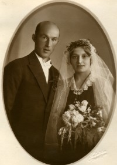
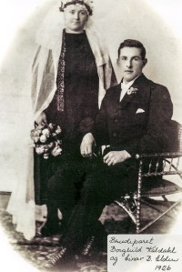
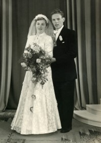
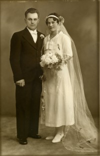

Lovise og Håkon sin slekt og familie
Lovise f. Eggan og Håkon Wahl
Personside 702
Bernhard Mortiniussen Elden
M, #17526, f. 7 mars 1872, d. 10 april 1929
Familie: Gunelle Severine Henriksdatter Helbostad (f. 1 september 1872, d. 5 mai 1958)
| Sønn | Helge Helbostad (f. 28 februar 1899, d. 1 februar 1919) |
| Sønn | Inge Bernhardsen Elden+ (f. 11 februar 1901, d. 12 desember 1979) |
| Sønn | Einar Bernhardsen Elden+ (f. 21 september 1903, d. 19 mars 1993) |
| Datter | Målfrid Bernhardsdatter Elden+ (f. 1 oktober 1906, d. 2 mars 2000) |
| Datter | Dagrun Bernhardsdatter Elden+ (f. 31 oktober 1910, d. 14 mai 1988) |
Biografi
Bernhard Mortiniussen Elden ble født den 7 mars 1872. Han giftet seg med Gunelle Severine Henriksdatter Helbostad den 6 mai 1898. Han døde den 10 april 1929 på/i Helbostad, Namdalseid, Nord-Trøndelag. Han ble gravlagt den 2 mai 1929 på/i Namdalseid kirkegård, Namdalseid, Nord-Trøndelag.
Bernhard Mortiniussen Elden bodde på/i Helbostad, Namdalseid, Nord-Trøndelag. Han var militærutdannet ved Underoffisersskolen i Forsvaret.
| Sist redigert | 29 september 2022 16:44:58 |
Helge Helbostad
M, #17527, f. 28 februar 1899, d. 1 februar 1919
| Referanser | Spanskesyken |
Foreldre
| Far | Bernhard Mortiniussen Elden (f. 7 mars 1872, d. 10 april 1929) |
| Mor | Gunelle Severine Henriksdatter Helbostad (f. 1 september 1872, d. 5 mai 1958) |
Biografi
Helge Helbostad ble født den 28 februar 1899 på/i Helbostad, Namdalseid, Nord-Trøndelag. Han døde i spanskesyken den 1 februar 1919 på/i Helbostad, Namdalseid, Nord-Trøndelag.
| Sist redigert | 19 mars 2023 08:54:02 |
| Slektskap | 4-menning 1 gang forskjøvet til Håkon Wahl |
Inge Bernhardsen Elden
M, #17528, f. 11 februar 1901, d. 12 desember 1979
Foreldre
| Far | Bernhard Mortiniussen Elden (f. 7 mars 1872, d. 10 april 1929) |
| Mor | Gunelle Severine Henriksdatter Helbostad (f. 1 september 1872, d. 5 mai 1958) |
Familie: Aagot Arntsen (f. 13 februar 1902, d. 17 februar 1997)
| Datter | Bodil Elden+ (f. 3 juni 1931, d. 14 juni 2026) |
{kind=link}

Inge Elden og Aagot Arntsen
Biografi
Inge Bernhardsen Elden ble født den 11 februar 1901 på/i Helbostad, Namdalseid, Nord-Trøndelag. Han giftet seg med Aagot Arntsen den 5 oktober 1930. Han døde den 12 desember 1979. Han ble gravlagt på/i Namdalseid kirkegård, Namdalseid, Nord-Trøndelag.
Han døde den 12 desember 1979. Han ble gravlagt på/i Namdalseid kirkegård, Namdalseid, Nord-Trøndelag.
Han døde den 12 desember 1979. Han ble gravlagt på/i Namdalseid kirkegård, Namdalseid, Nord-Trøndelag. Inge Bernhardsen Elden was also known as Inge Helbostad. Han var utdannet på/i Namdal Folkehøyskole i Namsos. Han kjøpte i 1930 Helbostad 168/3, Helbostad, Namdalseid, Nord-Trøndelag, - dette var slektsgården.
| Sist redigert | 29 juni 2026 11:52:16 |
| Slektskap | 4-menning 1 gang forskjøvet til Håkon Wahl |
Aagot Arntsen
K, #17529, f. 13 februar 1902, d. 17 februar 1997
Foreldre
| Far | Nils Olsen Arntsen (f. 4 mars 1864, d. 1950) |
| Mor | Ingeborg Matilde Olsen Teigen (f. 1 oktober 1874, d. 15 desember 1962) |
Familie: Inge Bernhardsen Elden (f. 11 februar 1901, d. 12 desember 1979)
| Datter | Bodil Elden+ (f. 3 juni 1931, d. 14 juni 2026) |
Inge Elden og Aagot Arntsen
Biografi
Aagot Arntsen ble født den 13 februar 1902 på/i Vemundvik, Namsos, Nord-Trøndelag. Hun giftet seg med Inge Bernhardsen Elden den 5 oktober 1930. Hun døde den 17 februar 1997 på/i Namdalseid, Nord-Trøndelag. Hun ble gravlagt på/i Namdalseid kirkegård, Namdalseid, Nord-Trøndelag.
Hun døde den 17 februar 1997 på/i Namdalseid, Nord-Trøndelag. Hun ble gravlagt på/i Namdalseid kirkegård, Namdalseid, Nord-Trøndelag. Aagot Arntsen was also known as Aagot Elden.
| Sist redigert | 29 juni 2026 11:58:53 |
Bodil Elden
K, #17530, f. 3 juni 1931, d. 14 juni 2026
Foreldre
| Far | Inge Bernhardsen Elden (f. 11 februar 1901, d. 12 desember 1979) |
| Mor | Aagot Arntsen (f. 13 februar 1902, d. 17 februar 1997) |
Familie: Aage Westerhus (f. 30 januar 1929, d. 26 august 2021)
| Sønn | Knut Inge Westerhus |
| Datter | Aasa Westerhus (f. etter 1955, d. før 2026) |
| Datter | Brit Westerhus |
| Datter | Sissel Westerhus |
Biografi
Bodil Elden ble født den 3 juni 1931 på/i Helbostad, Namdalseid, Nord-Trøndelag. Hun giftet seg med Aage Westerhus. Hun døde den 14 juni 2026 på/i Namdalseid, Namsos, Trøndelag. Hun ble gravlagt den 23 juni 2026 på/i Namdalseid kirkegård, Namsos, Trøndelag.
Bodil Elden was also known as Bodil Helbostad. Hun was also known as Westerhus. Hun bodde på/i Namdalseid, Nord-Trøndelag.
| Sist redigert | 19 juni 2026 23:29:14 |
| Slektskap | 5-menning til Håkon Wahl |
Einar Bernhardsen Elden
M, #17531, f. 21 september 1903, d. 19 mars 1993
Foreldre
| Far | Bernhard Mortiniussen Elden (f. 7 mars 1872, d. 10 april 1929) |
| Mor | Gunelle Severine Henriksdatter Helbostad (f. 1 september 1872, d. 5 mai 1958) |
Familie: Borghild Martinsdatter Kaldahl (f. 9 februar 1903, d. 15 juni 1998)
| Datter | Inger Einarsdatter Elden+ (f. 15 juli 1926, d. 12 september 2016) |
| Datter | Sigrun Eldbjørg Elden+ (f. 3 februar 1929, d. 25 oktober 2010) |
| Datter | Eldbjørg Elden+ (f. 3 februar 1929, d. 10 juli 2009) |
| Datter | Haldis Elden+ |
| Datter | Bjørnhild Elden+ (f. 4 september 1934, d. 25 november 2017) |
| Sønn | Martin Bernhard Elden+ |
| Sønn | Bjarne Erling Elden+ |
{kind=link}

Einar Elden og Borghild Kildahl
Biografi
Einar Bernhardsen Elden ble født den 21 september 1903 på/i Helbostad, Namdalseid, Nord-Trøndelag. Han giftet seg med Borghild Martinsdatter Kaldahl den 16 april 1926. Han døde den 19 mars 1993. Han ble gravlagt på/i Namdalseid kirkegård, Namdalseid, Nord-Trøndelag.
Einar Bernhardsen Elden kjøpte i 1927 Vengstad 167/4, Vengstad, Namdalseid, Nord-Trøndelag.
| Sist redigert | 11 april 2025 22:48:20 |
| Slektskap | 4-menning 1 gang forskjøvet til Håkon Wahl |
Borghild Martinsdatter Kaldahl
K, #17532, f. 9 februar 1903, d. 15 juni 1998
Foreldre
| Far | Martin Danielsen Kaldahl (f. 1853) |
| Mor | Ivrine Ovesdatter Ørsundli (f. 1859) |
Familie: Einar Bernhardsen Elden (f. 21 september 1903, d. 19 mars 1993)
| Datter | Inger Einarsdatter Elden+ (f. 15 juli 1926, d. 12 september 2016) |
| Datter | Sigrun Eldbjørg Elden+ (f. 3 februar 1929, d. 25 oktober 2010) |
| Datter | Eldbjørg Elden+ (f. 3 februar 1929, d. 10 juli 2009) |
| Datter | Haldis Elden+ |
| Datter | Bjørnhild Elden+ (f. 4 september 1934, d. 25 november 2017) |
| Sønn | Martin Bernhard Elden+ |
| Sønn | Bjarne Erling Elden+ |
Einar Elden og Borghild Kildahl
Biografi
Borghild Martinsdatter Kaldahl ble født den 9 februar 1903 på/i Kaldahl 161/3, Beitstad, Steinkjer, Nord-Trøndelag. Hun giftet seg med Einar Bernhardsen Elden den 16 april 1926. Hun døde den 15 juni 1998 på/i Steinkjer, Nord-Trøndelag. Hun ble gravlagt på/i Namdalseid kirkegård, Namdalseid, Nord-Trøndelag.
Borghild Martinsdatter Kaldahl was also known as Borghild Elden.
| Sist redigert | 11 april 2025 22:49:16 |
Inger Einarsdatter Elden
K, #17533, f. 15 juli 1926, d. 12 september 2016
Foreldre
| Far | Einar Bernhardsen Elden (f. 21 september 1903, d. 19 mars 1993) |
| Mor | Borghild Martinsdatter Kaldahl (f. 9 februar 1903, d. 15 juni 1998) |
Familie: Helge Leif Elden (f. 27 mai 1925, d. 15 november 1995)
| Sønn | Hallbjørn Erling Elden+ |
| Sønn | Odd Terje Elden (f. 30 mai 1954, d. 16 januar 1973) |
| Datter | Bjørg Audhild Elden+ |
{kind=link}

Inger og Helge Elden
Biografi
Inger Einarsdatter Elden ble født den 15 juli 1926 på/i Vengstad, Namdalseid, Nord-Trøndelag. Hun giftet seg med Helge Leif Elden i 1951. Hun døde av kreft den 12 september 2016 på/i Namdalseid sykeheim, Namdalseid, Nord-Trøndelag.
Inger Einarsdatter Elden was also known as Inger Helbostad. Hun bodde på/i Namdalseid, Nord-Trøndelag.
| Sist redigert | 17 mars 2025 22:43:46 |
| Slektskap | 5-menning til Håkon Wahl |
Sigrun Eldbjørg Elden
K, #17534, f. 3 februar 1929, d. 25 oktober 2010
Foreldre
| Far | Einar Bernhardsen Elden (f. 21 september 1903, d. 19 mars 1993) |
| Mor | Borghild Martinsdatter Kaldahl (f. 9 februar 1903, d. 15 juni 1998) |
Familie: Asbjørn Benjamin Slørdal (f. 27 november 1924, d. 5 juli 2013)
| Sønn | Bjørn Slørdahl |
| Sønn | Jostein Slørdal+ |
{kind=link}

Sigrun Elden og Asbjørn Slørdal
Biografi
Sigrun Eldbjørg Elden ble født den 3 februar 1929 på/i Namdalseid, Nord-Trøndelag. Hun giftet seg med Asbjørn Benjamin Slørdal den 27 juni 1953. Hun døde den 25 oktober 2010 på/i Namdalseid, Nord-Trøndelag.
Sigrun Eldbjørg Elden was also known as Sigrun Eldbjørg Helbostad. Hun was also known as Sigrun Eldbjørg Slørdahl.
| Sist redigert | 26 mars 2025 00:02:29 |
| Slektskap | 5-menning til Håkon Wahl |
Eldbjørg Elden
K, #17535, f. 3 februar 1929, d. 10 juli 2009
Foreldre
| Far | Einar Bernhardsen Elden (f. 21 september 1903, d. 19 mars 1993) |
| Mor | Borghild Martinsdatter Kaldahl (f. 9 februar 1903, d. 15 juni 1998) |
Familie: Einar Furre (f. 24 juli 1918, d. 1 mars 2002)
| Datter | Brit Marit Furre+ |
| Sønn | Per Einar Furre+ |
| Datter | Bodil Helene Furre+ |
Biografi
Eldbjørg Elden ble født den 3 februar 1929 på/i Namdalseid, Nord-Trøndelag. Hun giftet seg med Einar Furre den 5 august 1950. Hun døde den 10 juli 2009 på/i Namdalseid, Nord-Trøndelag. Hun ble gravlagt den 17 juli 2009 på/i Namdalseid kirke, Namdalseid, Nord-Trøndelag.
Eldbjørg Elden was also known as Eldbjørg Furre.
| Sist redigert | 10 mai 2016 00:00:00 |
| Slektskap | 5-menning til Håkon Wahl |
Bjørnhild Elden
K, #17537, f. 4 september 1934, d. 25 november 2017
Foreldre
| Far | Einar Bernhardsen Elden (f. 21 september 1903, d. 19 mars 1993) |
| Mor | Borghild Martinsdatter Kaldahl (f. 9 februar 1903, d. 15 juni 1998) |
Familie: Odd Lingen (f. 11 juli 1931, d. 21 februar 2016)
| Sønn | Per Arvid Lingen+ |
| Datter | Guro Rebekka Lingen+ |
| Datter | Hanne Berit Lingen+ |
| Sønn | Lars Lingen+ |
{kind=link}

Bjørnhild og Odd Lingen
Biografi
Bjørnhild Elden ble født den 4 september 1934 på/i Namdalseid, Nord-Trøndelag. Hun giftet seg med Odd Lingen i 1954. Hun døde den 25 november 2017. Hun ble gravlagt den 1 desember 2017 på/i Solberg kirke, Beitstad, Steinkjer, Nord-Trøndelag.
Bjørnhild Elden was also known as Bjørnhild Lingen. Hun bodde i 2009 på/i Namdalseid, Nord-Trøndelag.
| Sist redigert | 21 juni 2026 00:11:18 |
| Slektskap | 5-menning til Håkon Wahl |
Målfrid Bernhardsdatter Elden
K, #17540, f. 1 oktober 1906, d. 2 mars 2000
Foreldre
| Far | Bernhard Mortiniussen Elden (f. 7 mars 1872, d. 10 april 1929) |
| Mor | Gunelle Severine Henriksdatter Helbostad (f. 1 september 1872, d. 5 mai 1958) |
Familie: Einar Sverresen Elden (f. 3 september 1906, d. 30 august 1989)
| Sønn | Bjørn Elden+ (f. 15 juli 1937, d. 23 oktober 2020) |
| Datter | Sissel Elden |
| Datter | Liv Elden |
| Datter | Aase Elden |
{kind=link}

Målfrid og Einar Elden
Biografi
Målfrid Bernhardsdatter Elden ble født den 1 oktober 1906 på/i Helbostad, Namdalseid, Nord-Trøndelag. Hun giftet seg med Einar Sverresen Elden i 1935. Hun døde den 2 mars 2000 på/i Namdalseid, Nord-Trøndelag. Hun ble gravlagt etter 2 mars 2000 på/i Elda kirkegård, Namdalseid, Nord-Trøndelag.
Målfrid Bernhardsdatter Elden was also known as Målfrid Helbostad.
| Sist redigert | 23 juni 2026 20:04:04 |
| Slektskap | 4-menning 1 gang forskjøvet til Håkon Wahl |
Einar Sverresen Elden
M, #17541, f. 3 september 1906, d. 30 august 1989
Foreldre
| Far | Sverre Kristoffersen Elden (f. 12 oktober 1876, d. 2 januar 1949) |
| Mor | Anna Martinsdatter Kaldahl (f. 10 mars 1877, d. 27 januar 1950) |
Familie: Målfrid Bernhardsdatter Elden (f. 1 oktober 1906, d. 2 mars 2000)
| Sønn | Bjørn Elden+ (f. 15 juli 1937, d. 23 oktober 2020) |
| Datter | Sissel Elden |
| Datter | Liv Elden |
| Datter | Aase Elden |
Målfrid og Einar Elden
Biografi
Einar Sverresen Elden ble født den 3 september 1906 på/i Elden, Namdalseid, Nord-Trøndelag. Han giftet seg med Målfrid Bernhardsdatter Elden i 1935. Han døde den 30 august 1989. Han ble gravlagt på/i Elda kirkegård, Namdalseid, Nord-Trøndelag.
| Sist redigert | 23 juni 2026 20:03:46 |
Bjørn Elden
M, #17542, f. 15 juli 1937, d. 23 oktober 2020
Foreldre
| Far | Einar Sverresen Elden (f. 3 september 1906, d. 30 august 1989) |
| Mor | Målfrid Bernhardsdatter Elden (f. 1 oktober 1906, d. 2 mars 2000) |
Familie: Anne Marie Pettersen
| Sønn | Morten Elden |
| Datter | Tove Marie Elden |
Biografi
Bjørn Elden ble født den 15 juli 1937 på/i Namdalseid, Nord-Trøndelag. Han giftet seg med Anne Marie Pettersen. Han døde den 23 oktober 2020. Han ble gravlagt den 3 november 2020 på/i Namdalseid kirkegård, Namsos, Trøndelag.
Bjørn Elden bodde på/i Namdalseid, Nord-Trøndelag. Han ble jordfestet den 3 november 2020 Elda kirkegård, Namsos, Trøndelag.
| Sist redigert | 28 oktober 2020 00:00:00 |
| Slektskap | 5-menning til Håkon Wahl |
Dagrun Bernhardsdatter Elden
K, #17546, f. 31 oktober 1910, d. 14 mai 1988
Foreldre
| Far | Bernhard Mortiniussen Elden (f. 7 mars 1872, d. 10 april 1929) |
| Mor | Gunelle Severine Henriksdatter Helbostad (f. 1 september 1872, d. 5 mai 1958) |
Familie: Helge Gystad (f. 10 juli 1906, d. 8 juli 1982)
| Datter | Gerd Randi Gystad+ (f. 5 mai 1934, d. 4 juni 2017) |
| Sønn | Brynjulf Gystad+ |
| Sønn | Trond Gystad+ |
Biografi
Dagrun Bernhardsdatter Elden ble født den 31 oktober 1910 på/i Namdalseid, Nord-Trøndelag. Hun giftet seg med Helge Gystad i 1933 på/i Nidarosdomen, Trondheim, Sør-Trøndelag. Hun døde den 14 mai 1988 på/i Namdalseid, Nord-Trøndelag. Hun ble gravlagt på/i Elda kirkegård, Namdalseid, Nord-Trøndelag.
Dagrun Bernhardsdatter Elden was also known as Dagrun Gystad.
| Sist redigert | 9 juni 2014 00:00:00 |
| Slektskap | 4-menning 1 gang forskjøvet til Håkon Wahl |
Anna Lovise Henriksdatter Helbostad
K, #17547, f. 19 juli 1879, d. 7 april 1932
Foreldre
| Far | Henrik Mortinius Olsen Helbostad (f. 11 desember 1846, d. 1 desember 1882) |
| Mor | Ellen Anna Lorntsdatter Setter (f. 10 mai 1847, d. 21 mai 1940) |
Familie: Lauritz Peder Pedersen (f. 13 januar 1868, d. 24 august 1946)
| Sønn | Andrew Marius Petersen (f. 24 februar 1902, d. 19 november 1962) |
| Datter | Jensine Margrete Peterson+ (f. 25 februar 1905, d. 3 august 1997) |
Biografi
Anna Lovise Henriksdatter Helbostad ble født den 19 juli 1879 på/i Helbostad, Namdalseid, Nord-Trøndelag. Hun giftet seg med Lauritz Peder Pedersen den 21 desember 1900 på/i Vancouver, British Columbia, Canada. Hun døde den 7 april 1932 på/i Vancouver, British Columbia, Canada.
Anna Lovise Henriksdatter Helbostad was also known as Anna Lovise Pedersen. Hun innvandret til USA i 1918.
| Sist redigert | 20 august 2022 20:28:43 |
| Slektskap | 3-menning 2 ganger forskjøvet til Håkon Wahl |
Oline Lorntsdatter Setter
K, #17548, f. 9 mars 1848, d. 1938
Foreldre
| Far | Lornts Jensen (f. 1822, d. 1913) |
| Mor | Gunille Christine Olsdatter Setter (f. 3 mai 1823) |
Familie: Petter Mork (f. 5 juni 1849, d. 21 januar 1914)
| Datter | Martine Pettersdatter Mork+ (f. 17 mars 1876) |
| Datter | Lovise Otelie Pettersdatter Mork+ (f. 8 november 1879, d. 8 mars 1928) |
| Sønn | Ole Petter Mork (f. 18 november 1892, d. 17 september 1972) |
Biografi
Oline Lorntsdatter Setter ble født den 9 mars 1848 på/i Namdalseid, Nord-Trøndelag. Hun giftet seg med Petter Mork. Hun døde i 1938 på/i Namdalseid, Nord-Trøndelag.
Oline Lorntsdatter Setter was also known as Oline Mork.
| Sist redigert | 26 februar 2013 00:00:00 |
| Slektskap | Søskenbarn 3 ganger forskjøvet til Håkon Wahl |
Petter Mork
M, #17549, f. 5 juni 1849, d. 21 januar 1914
Familie: Oline Lorntsdatter Setter (f. 9 mars 1848, d. 1938)
| Datter | Martine Pettersdatter Mork+ (f. 17 mars 1876) |
| Datter | Lovise Otelie Pettersdatter Mork+ (f. 8 november 1879, d. 8 mars 1928) |
| Sønn | Ole Petter Mork (f. 18 november 1892, d. 17 september 1972) |
Biografi
Petter Mork ble født den 5 juni 1849. Han giftet seg med Oline Lorntsdatter Setter. Han døde den 21 januar 1914 på/i Namdalseid, Nord-Trøndelag.
| Sist redigert | 26 februar 2013 00:00:00 |
Martine Pettersdatter Mork
K, #17550, f. 17 mars 1876
Foreldre
| Far | Petter Mork (f. 5 juni 1849, d. 21 januar 1914) |
| Mor | Oline Lorntsdatter Setter (f. 9 mars 1848, d. 1938) |
Familie: Oskar Edvind Edvardsen Rosseth (f. 14 november 1866, d. 26 desember 1939)
| Datter | Magnhild Oskarsdatter Rosseth+ (f. 16 mars 1900, d. 1983) |
Biografi
Martine Pettersdatter Mork ble født den 17 mars 1876 på/i Namdalseid, Nord-Trøndelag. Hun giftet seg med Oskar Edvind Edvardsen Rosseth.
Martine Pettersdatter Mork was also known as Martine Rosseth.
| Sist redigert | 26 februar 2013 00:00:00 |
| Slektskap | 3-menning 2 ganger forskjøvet til Håkon Wahl |